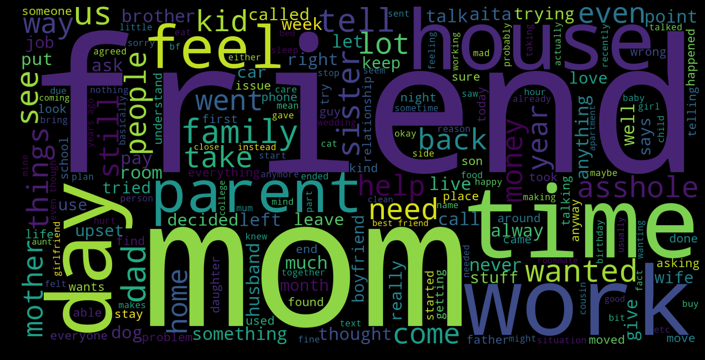
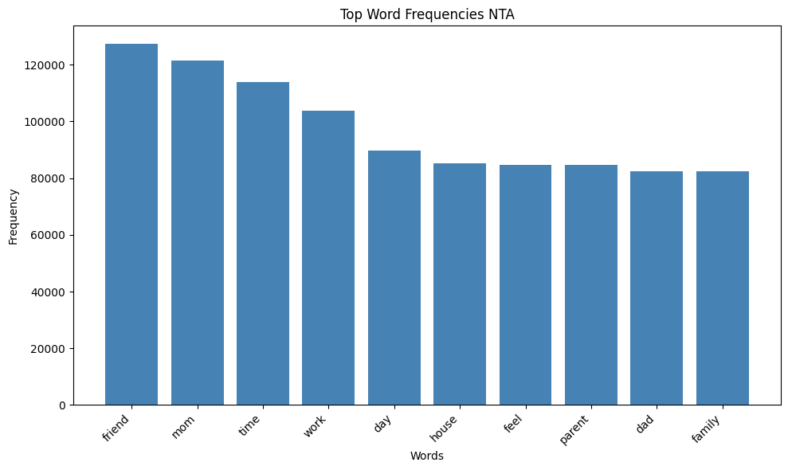
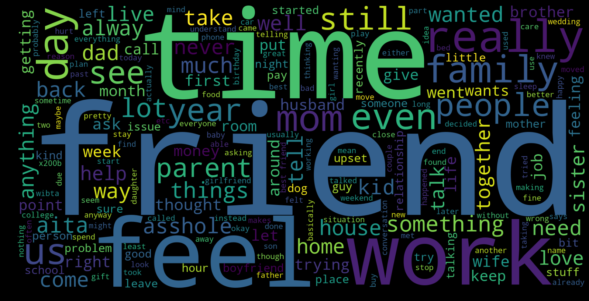
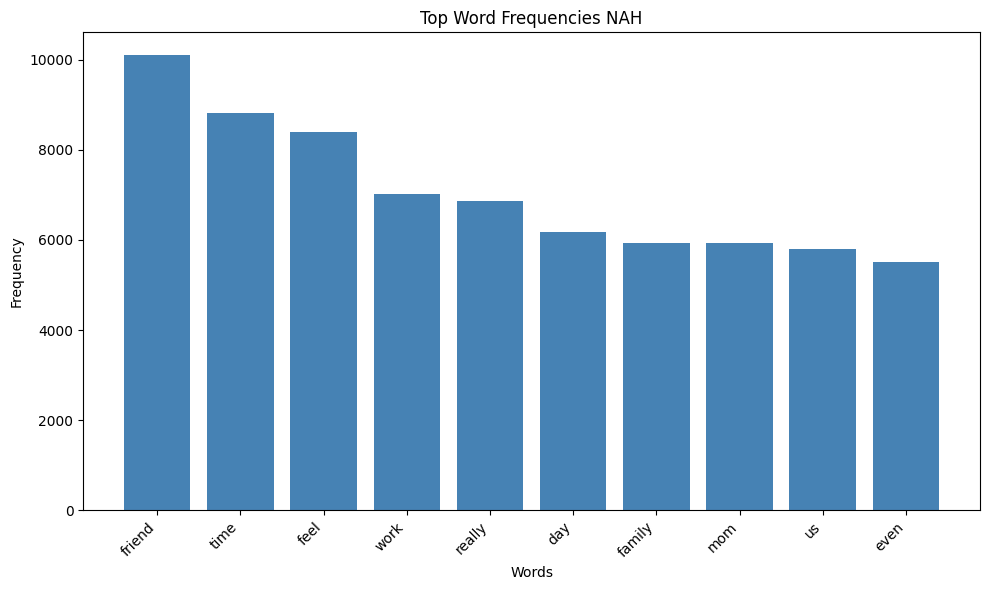

Trends:
- Friend, time, feel, work are quite high in frequency in the NAH category.
- Friend, mom, time, work are high in frequency in the NTA category.
- The word ‘mom’ seems to be a distinction between the two categories with the word ‘mom’ appearing less frequently in the NAH category.
- The word ‘family’ occurs a lot more frequently than ‘mom’ in NAH but we see the opposite trend in NTA.
Not The A**hole (NTA) Data


No A**holes Here (NAH) Data

